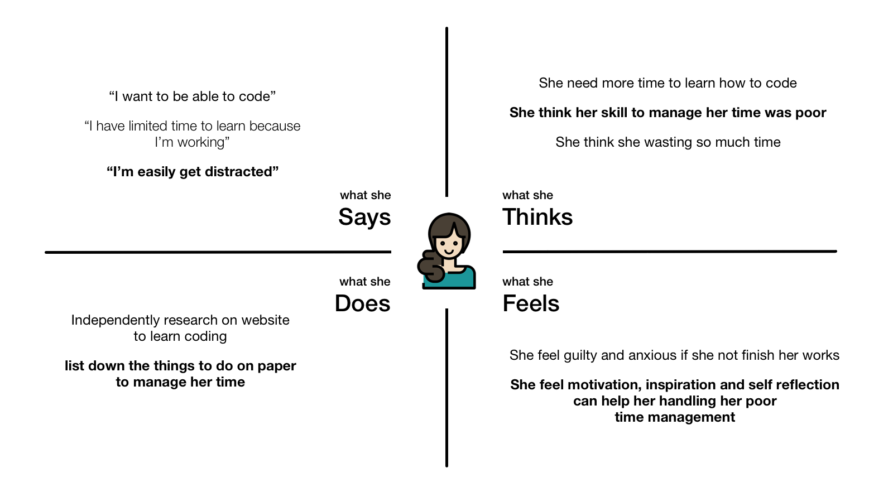

Cheer!
App information
- Category: iOS Native App
- Github Repo URL: github.com/alvinmatthew12/cheer
App Description
Cheer is an app that can help you manage your time by set your daily goals and will give you words of encouragement to continue your activities.
Background
A little story, so last April, after studying iOS development about half a month at Apple Developer Academy @IL, I got a challenge to make an app for 1 week including the researching problems faced by friend through they learning journey, designing the app, and explore and learn to use swift and iOS frameworks.
The Problems
Apple Developer Academy is a place to explore and learn something new. But some learners have a limited time to learn because they have work to do. It will be a problem if we have a poor time management, especially people who are easily distracted, it will make us feel anxious, guilty and imagine something worst might happens.
Cheer is an app to help you manage your time by set daily goals and give you words of encouragement to continue your activities.
The Process
Investigation
I interviewed (using 5 Whys Technique) one of my friend from the academy to find out what the problem she faced in her learning journey.
Then I made an Empathy Map from the interview results.
Empathy Map
From the Empathy Map I conclude that my friends need motivation and encouragement to do her activities. After that I did a research on how to help encouraging her to do works. Here what I found:
-
Set daily goals
Set daily goals can help consistency to achieving goals, help you to get better focus and avoid potential distractions much better, and create a solid structure and a strong battle plan for your day. To set daily goals you need to make them specific, realistic and visual. -
Celebrate progress with encouraging words
Encouragement is the giving of strength and a building up. Many ways to encourage people, one of it is put into words. We can use motivation or inspirational words for encouraging pharse, because Encouraging phrases themselves spark a positive neurological response. In 1970s scientist John Eccles found that just by speaking “positive verbs” out loud, the area of the brain responsible for movement jumped into action.
Design
I use Sketch to make the prototype.
I name the app cheer! in purpose to cheer up my friend to continue her activities.
I choose Blue color because I found that the meaning of blue color are calm, brings peace, keep the bad spirits away. Which mean can make the people calm when feeling anxious.
Development
I use Swift as the programming language and UIKit to create the user interface. I use Core Data to store the daily goals and the tasks to achieve the goals that have been created. I also use UserNotifications to create recurring notifications every certain time.
The Challenges
I'm new to iOS development in that time, I only learn about half a month. It was the first time iOS frameworks such as UIKit, Core Data and User Notifications. I handle that by learning through tutorial on the internet. I also I had trouble designing this app according to Human Interface Guidelines, it's because I spent a lot more time in exploring frameworks and solving my friend problem. I've already read and understand the HIG so I can apply it in my next projects.
Skills Learned
- Conducting interview using 5 Whys technique
- Empathy Mapping
- Process data from the findings into solution
- Prototyping using Sketch
- Developing an app using Swift
- Implement Core Data and UserNotifications
- Understanding Human Interface Guidelines
- Learn to use extension in Swift
Plan for Future Development
- Change the UI/UX according to HIG
- Fix the app navigation
- Implement pomodoro technique